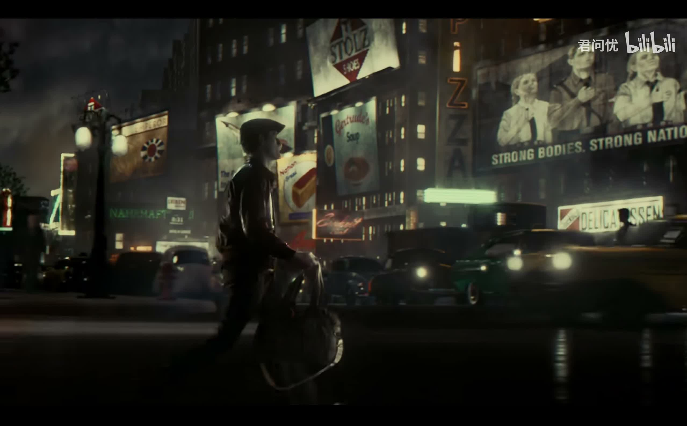
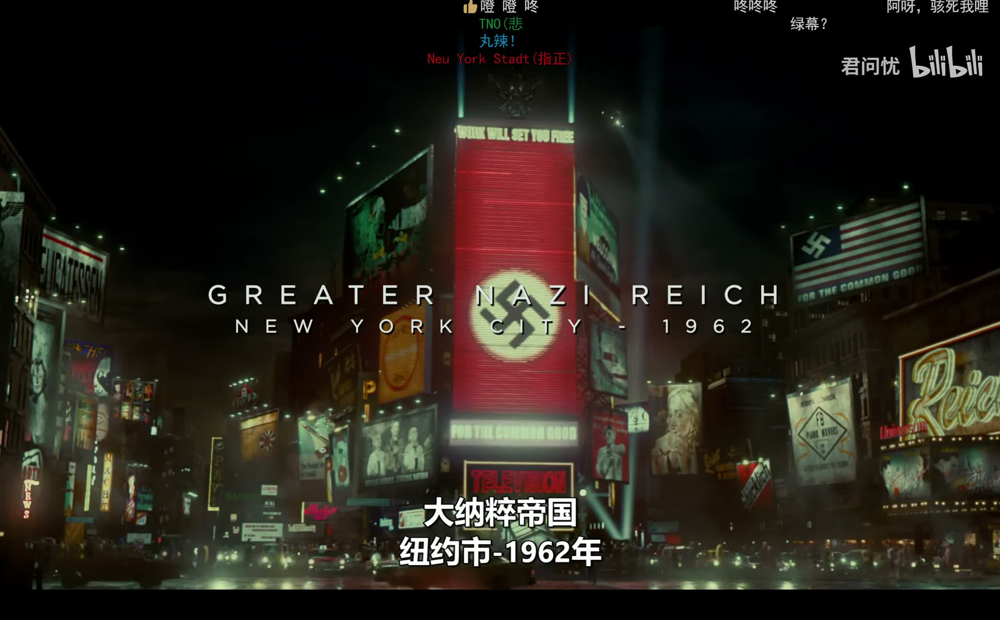
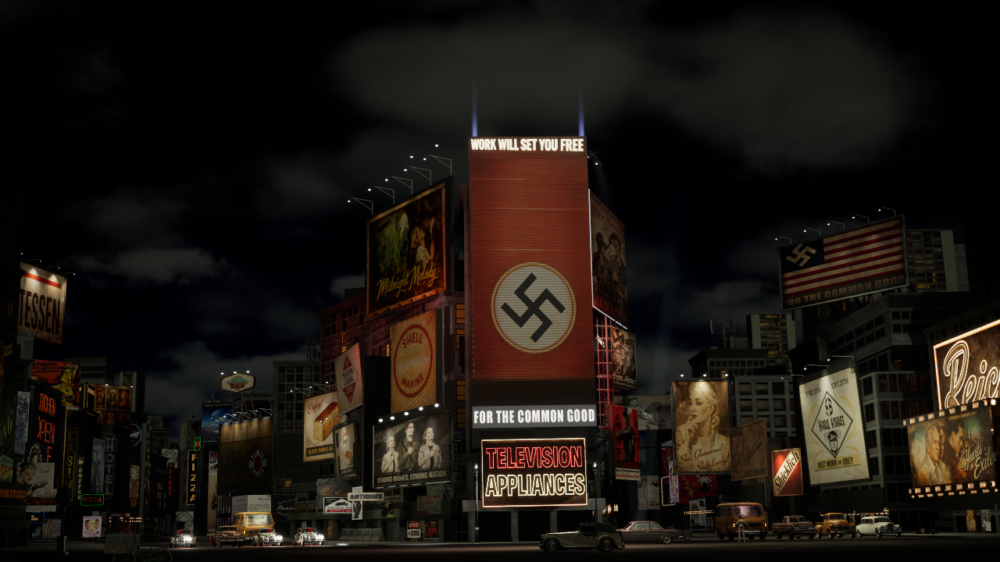
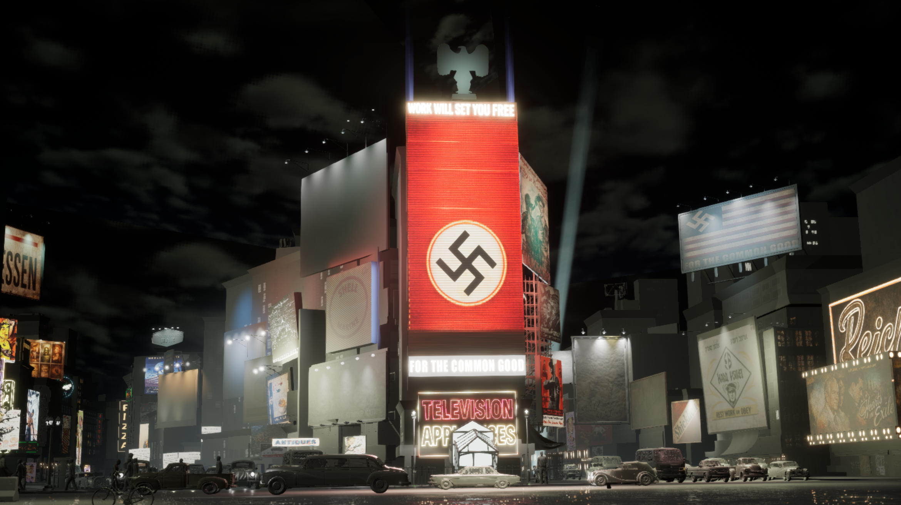
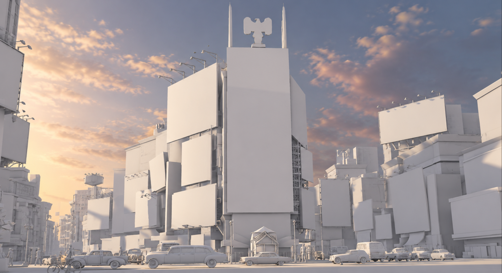
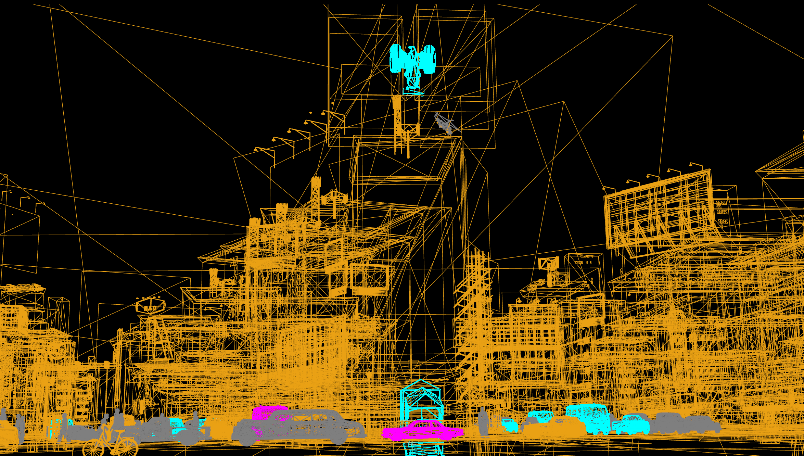
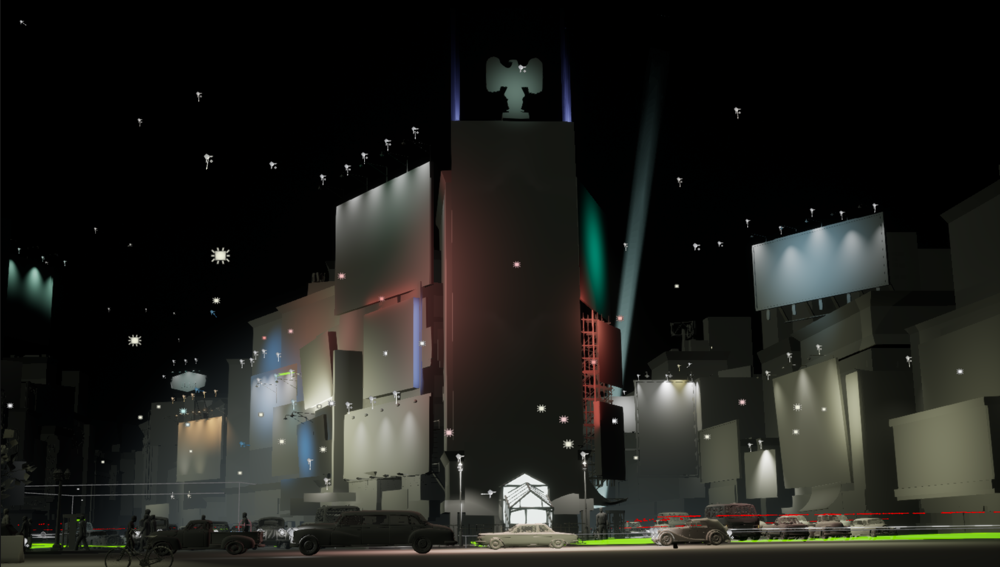
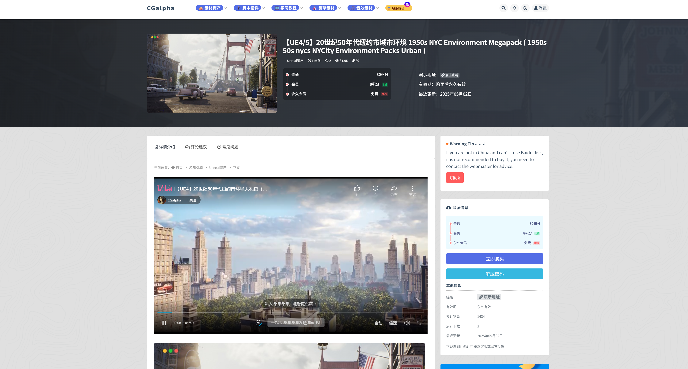

Read the reference.
I study the sign from the film viewpoint, looking at its graphic appearance, proportions and relationship to the surrounding street.

PROJECT 03 / UNREAL ENGINE ENVIRONMENT
Times Square / A cinematic scene recreation
WATCH THE SEQUENCE ↓RECONSTRUCTING A PLACE THROUGH A CAMERA
A personal environment study translating a screen reference into a staged Unreal Engine street scene.
The focus is not a one-to-one copy of every building. It is the relationship between architectural scale, illuminated signs, a reflective street and movement through the frame.
01 / FINAL SEQUENCE
Two views of the same environment: a street-level passage and a wider Times Square composition.
Contains fictional authoritarian imagery from the referenced series. Presented for critical film and environment study, not political endorsement. The supplied cut includes audio; its licensing must be confirmed before public release.
02 / STUDY INTENT
My visual communication background shaped how I approached the street: as a system of images, materials and light.
I created many of the posters and sign graphics, developed and adjusted most of the scene materials, and built the lighting step by step against the film reference. My aim was to translate the visual language of the screen into a coherent Unreal Engine environment.
Buildings, people and vehicles use third-party assets. I chose a 1950s New York asset collection because its architecture and period street language provided a suitable starting point for the series' alternate-history setting, rather than claiming an exact historical match.
DESIGN METHOD / SIGNAGE
My approach starts with the film camera: how does a sign actually appear in the frame?
I study the sign from the film viewpoint, looking at its graphic appearance, proportions and relationship to the surrounding street.
I break the appearance into graphic content, sign structure, material response and illumination. Each layer contributes to the result.
I recreate the graphic, develop the material and adjust the scene lighting, then compare the result from the intended camera view.
03 / REFERENCE & RECREATION
Side-by-side studies, not a pixel-perfect match. Reference frames retain their original screen-recording borders and marks.



The central tower gives the wide shot a recognisable focal point. Surrounding signs provide scale and rhythm.
Bright advertising surfaces contrast with dark building masses. The recreation is warmer and cleaner than the reference's green-grey haze.
Traffic and pedestrians animate the street. The reference's foreground character performance is not reproduced in this cut.
Reference: The Man in the High Castle, supplied screen recording. All series imagery belongs to its respective rights holders. Episode, timecode and source link require confirmation before publication.
04 / PRODUCTION DEVELOPMENT
A selection from the saved production stages. These are actual project records, not reconstructed breakdown renders.

Establish the street composition and building relationships around the intended camera views. Judge the environment from the shot rather than from a top-down plan.
Develop readable advertising surfaces and reflected light. The saved U007 and U008 stages track sign emission and the wet street with traffic.
Refine the balance between sign brightness, dark street masses and the visibility of vehicles. U009 and U010 record two-shot and lighting iterations.
U011 through U016 document character movement tests and crowd development. Pathing and intersections remain review areas, not claimed finished systems.
The U017 cut joins the two camera sections, removes the initial crowd-generation interval and excludes the faulty final frame. The original source video is preserved.
05 / SCENE BREAKDOWN
Actual Unreal Engine viewport captures supplied from the project. These show scene assembly and lighting, not a claim that every model was built from scratch.




06 / REFLECTION
The current sequence brings together a coherent street, a strong signage hierarchy and two complementary camera views.
Closer reference matching would mean refining the green-grey atmosphere, pedestrian spacing and traffic intersections, then developing the foreground character action. This is a completed study cut, not a claim of final film-level equivalence.
AUTHORSHIP & CREDITS
Many of the posters and sign graphics; most scene material development and adjustments; reference-led lighting built step by step; scene assembly, camera staging, crowd and traffic configuration, and render iteration.
My visual communication practice informs the graphic hierarchy and the relationship between signage, surface and light. This is not a claim of creating every mesh, texture, character or animation from scratch.
Buildings, characters and vehicles are sourced assets. The environment collection is identified in the supplied download listing as 1950s NYC Environment Megapack.
The collection was selected for its period New York architecture and street character. Original creator, exact edition, character and vehicle sources, and applicable licences remain to be verified. The download listing is provenance information, not proof of authorisation.
This independent study is not affiliated with the series or its producers.
